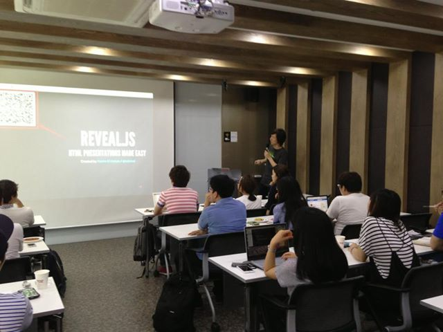
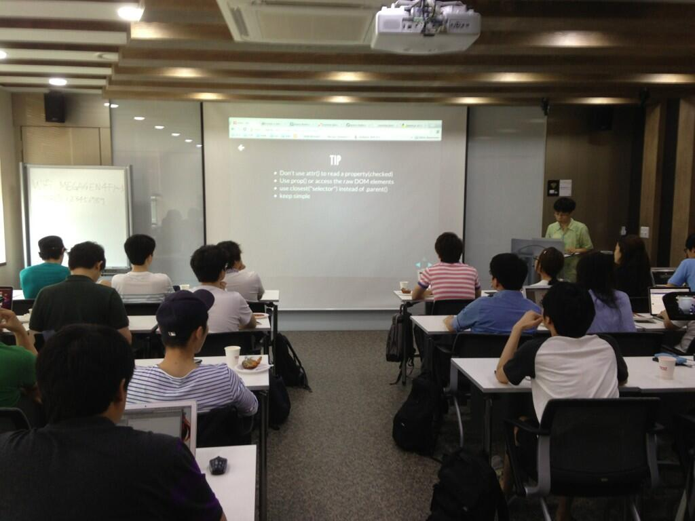
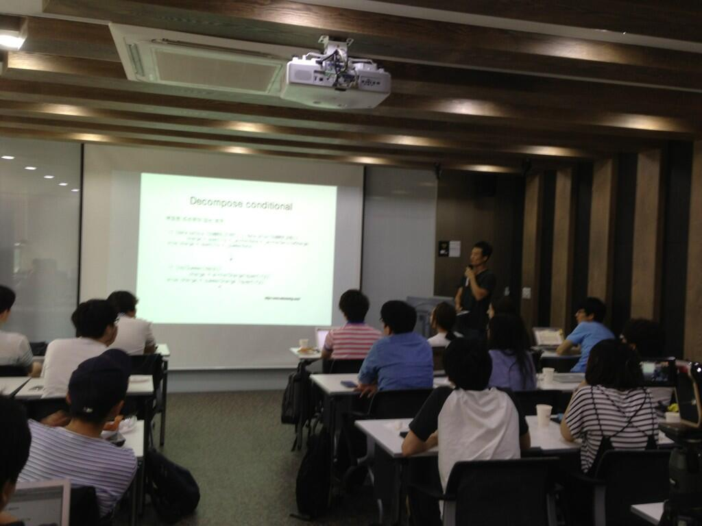
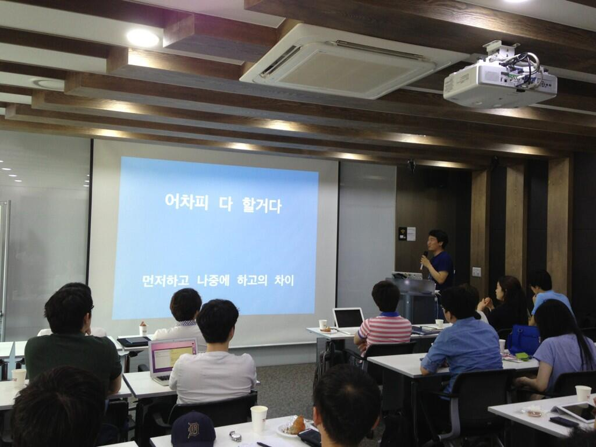
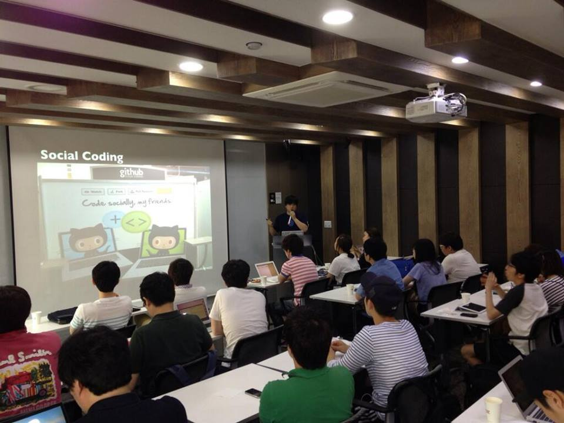

About Author

Insanehong
blog: http://insanehong.kr
twitter: @insanehong
github: insanehong.github.com
- NAVER Corporation, Front-End Engineer(2013~)
- Like Javascript, Dart, HTML5, CSS3,Responsive Web, Haroopress, Frends, Lean Startup, Open Source
- Hackrslab co-founder
- About me http://about.me/insanehong
About this Article
Date Released:
Sunday, September 15 2013 2:41 PMFRENDS Meetup 행사를 마치고
FRENDS Meetup
이제 올해도 정식모임을 5번 했습니다. 이제 7번 남았네요. 5번 모일동안 나왔던 거 추스려서.. 소규모 Meetup을 한번 하면 어떨까요?
5월 어느날 FRENDS group 에 올라온 하나의 글로 시작된 FRENDS Meetup 행사가 나름 성공적으로 끝이 났다.
한달여간 다함께 준비하고 노력한 결과로 95%가 넘는 참석률과 NHN의 지원으로 말미암아 비용걱정 없이 잘 치루어 낸거 갔다.

처음 해본 리허설 모임.
이번 행사를 준비하면서 처음 해봤던 경험중 하나가 사전 리허설 모임.
사실 FRENDS의 2013년 목표를 정할때 나왔던 얘기이기도 하지만 실제로 나에게 큰 도움이 되었던 경험이였다.
최종 완성본이 아니더라도 다같이 모여 발표에 대한 리허설도 해보고 서로 보안해나갈 부분이나 수정되었으면 하는 부분에 대한 얘기를 주고 받고 이후 발표를 좀더 완성도 있게 준비해보자는 취지였는데 내 발표는 여기서 나온 얘기들로 인하여 그 내용과 스토리라인이 대폭 수정되었기도 하다.
결론적으로는 발표에서 내가 하고 싶었던 얘기를 (빼먹은게 몇가지 있지만) 좀더 구체적이고 자세하게 전달할수 있었다.

살작 아쉬웠던 장소
애당초에 좀더 많은 인원으로 기획하였지만(40여명 정도) 장소의 문제로 인하여 30명으로 줄였었는데....정작 우리가 앉아 있을 자리는 생각하지 못했다.
그결과 준비시간까지 합쳐 장작 6시간정도를 서있어야 했다.
특히 마지막 세션을 맡은 나는 체력인 문제로 맨바닥에 앉아서 휴식을 취하는 사태가 발생하기도 했다.

재밌던 애피소드
행사 시작 1분전 급히 전화를 한통 하게 되었다.
"난하님 어디세요???""
첫번째 발표자 박난하 님이 아직 도착하지 않았다...
처음 10여분간은 zziuni 님이 FRENDS 에 대한 간단한 소개와 오늘 행사에 대한 개요 얘기하는 시간이 있었기에 망정이지 자칫 발표순서를 변경해야하는 사태(?)가 발생할 수도 있었다.
그래도 시간에 맞추어 도착하셔서 다행히 첫번째 발표를 변경없이 하실수 있었다.

다음을 기약하며
어째든 오늘 행사는 자체평가서 나름 만족스런 행사로서 마무리 되었고... 다음 행사에서는 더 재미있는 주제로 열릴 것이다.
사실 행사 이전에 계획했던 일을 먼저 끝내야 겠지만....

이번 행사를 위해서 고생한
FRENDS맴버들 모두 수고 하셨습니다